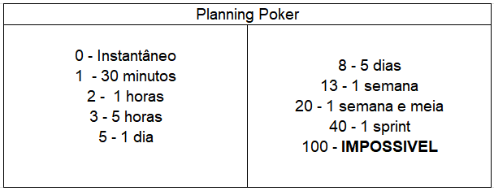
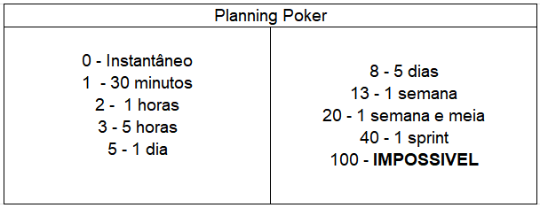

Caso você, usuário, esteja sofrendo de duvidas recorrentes sobre a metodologia e seus procedimentos, nesta pagina vamos fornecer alguns materiais que podem vir a solucionar seus questionamentos.
• Autoavalição
A autoavaliação no Scrum é uma prática importante para que o Scrum Master possa avaliar o desempenho do grupo e identificar áreas de melhoria. Aqui estão alguns passos para fazer uma boa autoavaliação no Scrum:
Primeiro passo: Identificação de objetivos
Identifique seus objetivos com o Scrum Master, isso pode incluir a melhoria da eficiência da equipe, a remoção de impedimentos ou a promoção da colaboração entre os integrantes
Segundo passo: Avalie seu desempenho
Avalie ele em relação aos objetivos identificados anteriormente, use métricas e dados concretos sempre que possível, isso pode incluir a eficiência da equipe, o tempo gasto em reuniões e a resolução de impedimentos.
Terceiro passo: Identifique áreas de melhoria
Depois de avaliar seu desempenho identifique áreas em que você pode melhorar. Isso pode incluir a melhora da comunicação com a equipe e a remoção de impedimentos de forma mais eficaz por exemplo. Defina metas de melhoria especificas e mensuráveis para melhoras seu desempenho como o desenvolvimento de habilidades, a implementação de práticas ágeis adicionais ou a promoção da colaboração entre os integrantes, etc.
Qaurto passo: Plano de ação e acompanhamento
desenvolva um plano de ação e acompanhe seu progresso, desenvolva um plano de ação para alcançar suas metas e monitore o seu progresso fazendo ajustes ao plano de ação se necessário.
• Backlog
Lembre se que o backlog é um documento “vivo” e deve ser atualizado regularmente para garantir que as necessidades do produto sejam atendidas. Siga os seguintes passos:
Primeiro passo: Identificação
Identifique o objetivo do projeto antes de criar o backlog, é importante entender o objetivo para criar um documento que atenda as necessidades do produto.
Segundo passo: Requisitos do produto
Identifique os requisitos do produto, isso pode incluir a funcionalidade do produto, os requisitos do usuário, a arquitetura, lembre se de priorizar os requisitos, sendo feito com base no valor que cada requisito traz para o produto.
Terceiro passo: Crie as User Stories
Crie as histórias de usuário com base nos requisitos identificados e priorizados, sejam estas descrições curtas e objetivas de uma funcionalidade do produto que descrevem o que o usuário quer e por que ele quer. Lembre-se de estimar as histórias, para que o usuário tenha ideia de quanto tempo demorará para desenvolver cada uma delas.Identifique os requisitos do produto, isso pode incluir a funcionalidade do produto, os requisitos do usuário, a arquitetura, lembre se de priorizar os requisitos, sendo feito com base no valor que cada requisito traz para o produto.
O backlog deve conter todas as histórias de usuário que serão desenvolvidas durante o sprint, portanto deve ser refinado regularmente a fins de garantir que as histórias estejam atualizadas e refletindo as necessidades do produto.
• Daily Scrum
O daily scrum é uma reunião diária para manter a equipe alinhada e engajada, portanto é importante garantir que todos os membros estejam presentes e que a reunião seja realizada de maneira eficiente, para isso siga esse passo a passo:
Primeiro passo: Definição
Faça uma escolha adequada de espaço e horário, essa é uma reunião rápida de 15 minutos, portanto é importante escolher um local que possibilite boa comunicação e um horário conveniente a todos.Identifique o objetivo do projeto antes de criar o backlog, é importante entender o objetivo para criar um documento que atenda as necessidades do produto.
Segundo passo: Faça as 3 perguntas
O Scrum Master deve começar a reunião explicando o objetivo do daily scrum e lembrando a todos da equipe das três perguntas que devem ser respondidas: O que foi feito desde a última reunião? Oque será feito até a próxima reunião? Existe algum impedimento atrapalhando o andamento do projeto? As respostas a essas perguntas devem ser curtas e objetivas.
Terceiro passo: Resolução de problemas
Mantenha o foco e resolva impedimentos, qualquer assunto que não esteja diretamente relacionado com o a reunião deve ser discutido após a mesma. E se alguém mencionar algum impedimento que está atrapalhando o andamento o projeto, o Scrum Master deve tomar nota e discutir com a equipe como resolver o problema.
• Gráfico Burndown
Primeiro passo: Definição de tarefas
Distribuir as tarefas e o peso de cada uma delas antes de realizar o gráfico, atribuindo as tarefas de cada um, estimar o esforço é o que ajudará a distribuir de forma igual, assim não pesando muito para apenas uma pessoa do grupo.
Um exemplo para ajudar a definir um peso para uma tarefa é o planning poker, que é uma técnica que se baseia em definir uma sequencia numerica, como 1, 2, 3, 5, 8, 13, 21, etc, e relacionar ela com uma estimativa de tempo. Abaixo seguem exemplos de como organizar tanto a estimativa de tarefas como também o planning poker:
 

Segundo passo: Realização de Gráfico
Mesmo sendo opcional, a melhor opção para visualizar de forma pontual como está o andamento
da equipe é traçar um gráfico físico, onde temos uma linha do tempo que seria ideal para
realizar as tarefas
de forma uniforme e organizada e uma linha onde mostre como esta o andamento do projeto em relação a
tempo.
É importante notar que se a sua linha de projeto esta acima da linha ideal, então você está
atrasado em
relação ao projeto, caso esteja abaixo você está adiantado.

Terceiro passo: Atualização diaria
Esse tema encaixa bem com daily scrum, o gráfico deve ser atualizado
conforme as tarefas estão sendo feitas, para manter a visualização em dia assim tendo uma ideia do esforço
restante.
Avalie o progresso para identificar se a equipe está no caminho correto
para concluir todas as
tarefas dentro do prazo.
Video
Logo abaixo, temos uma indicação de video do canal: TI Carreiras onde você pode aprender mais sobre como fazer o seu próprio grafico burndown